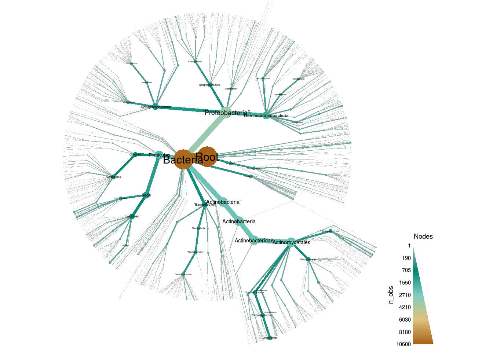
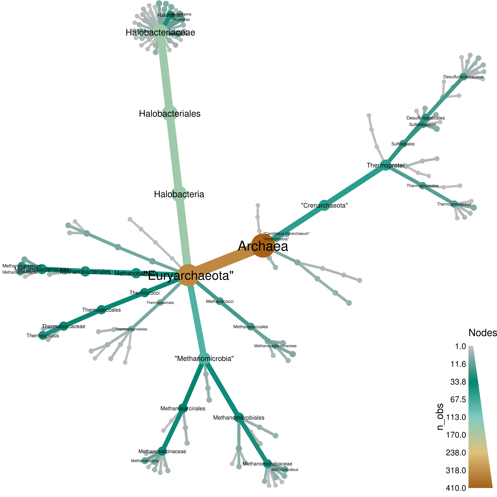
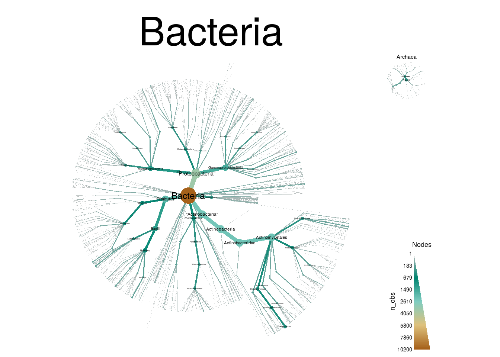
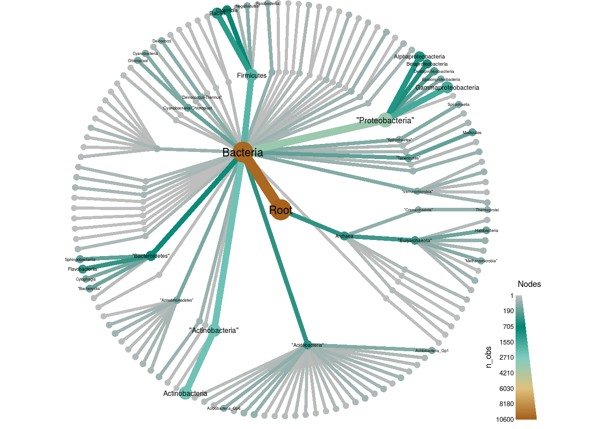
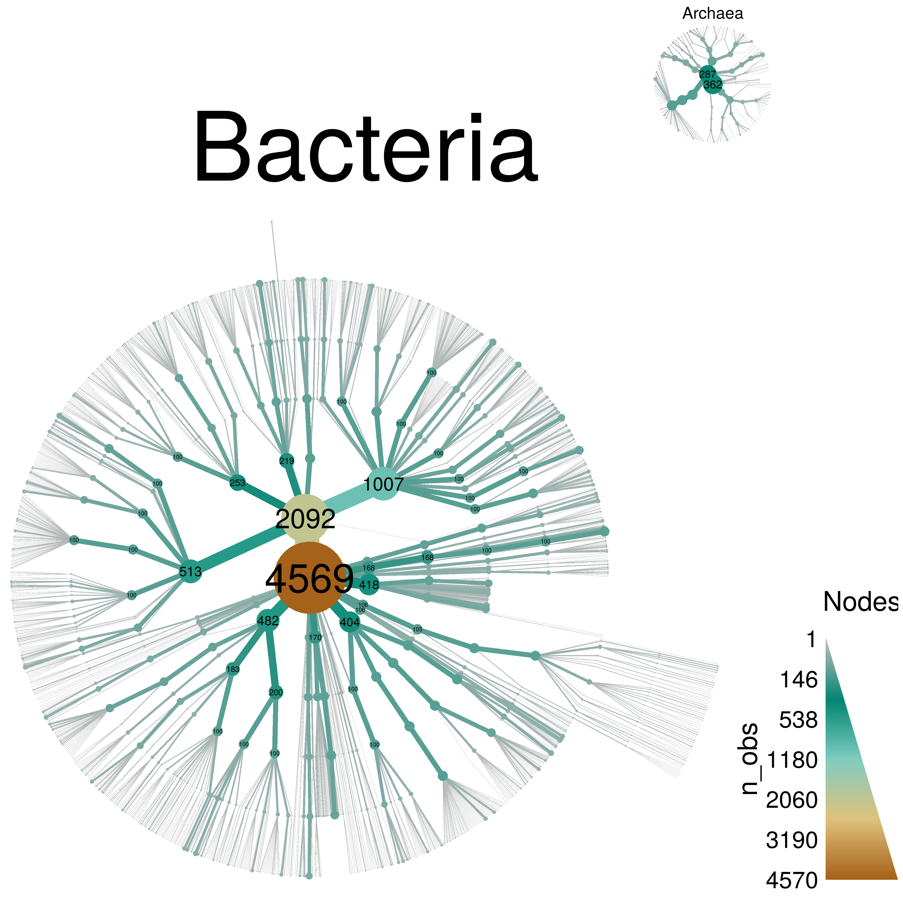
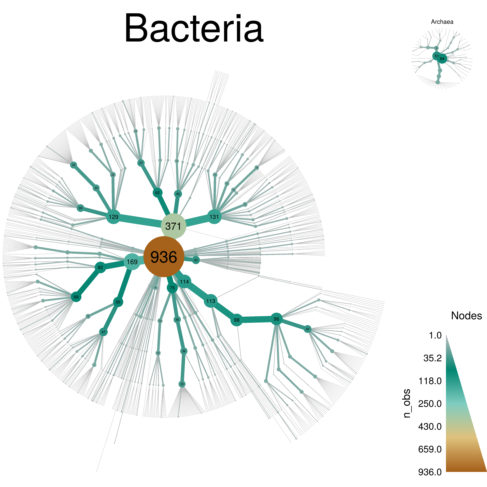
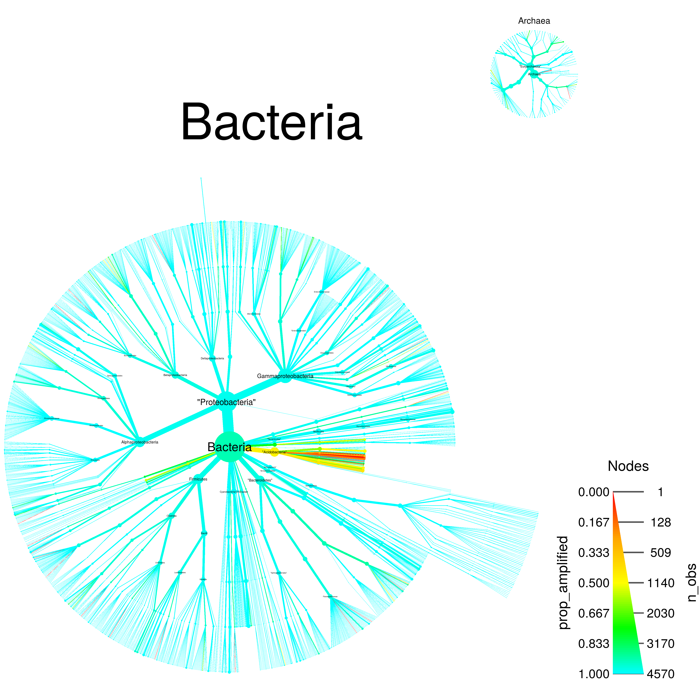
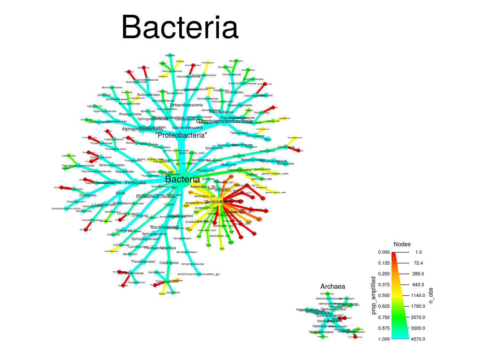
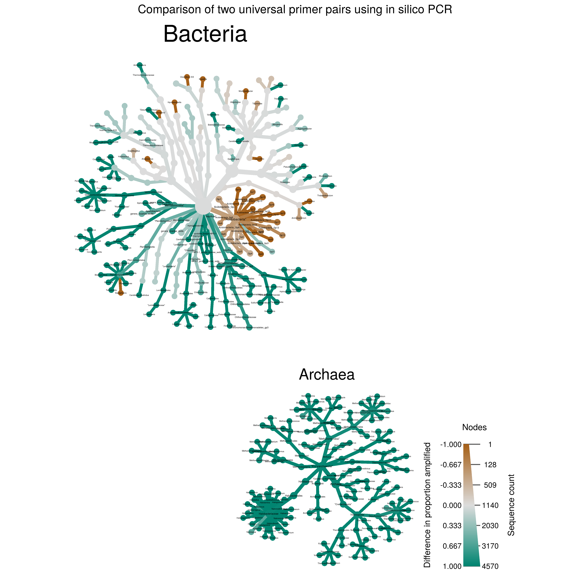

Metabarcoding is revolutionizing microbial ecology and presenting new challenges:
MetacodeR is an R package that attempts to addresses these issues:
Documentation is under construction at http://grunwaldlab.github.io/metacoder.
While this project is in development it can be installed through Github:
devtools::install_github(repo=“grunwaldlab/metacoder”, build_vignettes = TRUE) library(metacoder)
If you’ve built the vignettes, you can browse them with:
browseVignettes(package=“metacoder”)
The function that runs in silico PCR requires primersearch from the EMBOSS (Olson, 2002) tool kit to be installed. This is not an R package, so it is not automatically installed. Type ?primersearch after installing and loading MetcodeR for installation instructions.
Most databases have a unique file format and taxonomic hierarchy/nomenclature. Taxonomic data can be extracted from any file format using the extract_taxonomy function. Classifications can be parsed offline or retrieved from online databases if a taxon name, taxon ID, or sequence ID is present. A regular expression with capture groups and a corresponding key is used to define how to parse the file. The example code below parses the 16s Ribosome Database Project training set for Mothur.
R can be used to download files from the internet and decompress them. The code below downloads the compressed data to a temporary directory:
rdp_fasta_url <- "http://mothur.org/w/images/b/b5/Trainset10_082014.rdp.tgz"
temp_dir_path <- tempdir()
local_file_path <- file.path(temp_dir_path, basename(rdp_fasta_url))
download.file(url = rdp_fasta_url, destfile = local_file_path, quiet = TRUE)Next we will uncompress the archive and identify the fasta file.
# Get contents of tar archive
unpacked_file_paths <- untar(local_file_path, list = TRUE)
# Uncompress archive
untar(local_file_path, exdir = temp_dir_path)
# Identify the Mothur RDP training set
unpacked_fasta_path <- file.path(temp_dir_path,
unpacked_file_paths[grepl("fasta$", unpacked_file_paths)])The file can then be parsed using the ape package and the taxonomy data in the headers can be extracted by extract_taxonomy:
# Load the package
library(metacoder)
# Load the input FASTA file
seqs <- ape::read.FASTA(unpacked_fasta_path)
# Print an example of the sequence headers
cat(names(seqs)[1])## AB294171_S001198039 Root;Bacteria;Firmicutes;Bacilli;Lactobacillales;Carnobacteriaceae;Alkalibacterium# Extract the taxonomic information of the sequences
data <- extract_taxonomy(seqs, regex = "^(.*)\\t(.*)",
key = c(id = "obs_info", "class"),
class_sep = ";")The resulting object contains sequence information associated with an inferred taxonomic hierarchy. The standard print method of the object shows a part of every kind of data it contains:
data## `taxmap` object with data for 2794 taxa and 10650 observations:
##
## ---------------------------- taxa ----------------------------
## 1, 2, 3, 4, 5 ... 2789, 2790, 2791, 2792, 2793, 2794
##
## ------------------------- taxon_data -------------------------
## # A tibble: 2,794 x 3
## taxon_ids supertaxon_ids name
## <chr> <chr> <chr>
## 1 1 <NA> Root
## 2 2 1 Archaea
## 3 3 1 Bacteria
## 4 4 2 "Crenarchaeota"
## 5 5 2 "Euryarchaeota"
## 6 6 2 "Korarchaeota"
## 7 7 2 "Nanoarchaeota"
## # ... with 2,787 more rows
##
## -------------------------- obs_data --------------------------
## # A tibble: 10,650 x 3
## obs_taxon_ids id
## <chr> <chr>
## 1 1289 AB294171_S001198039
## 2 369 AB243007_S000622964
## 3 2402 AJ717394_S000623308
## 4 1409 AJ518871_S000351779
## 5 962 CP000159_S000632736
## 6 1311 X76329_S000015720
## 7 616 AB184711_S000652435
## # ... with 1.064e+04 more rows, and 1 more variables: sequence <chr>
##
## ------------------------- taxon_funcs -------------------------
## n_obs, n_obs_1 ... n_subtaxa_1, hierarchiesNote the taxon_funcs part contains function names (e.g. n_obs) used to calculate taxon statistics. You can see the results of these calculations using the taxon_data function:
taxon_data(data)## # A tibble: 2,794 x 9
## taxon_ids supertaxon_ids name n_obs n_obs_1 n_supertaxa
## <chr> <chr> <chr> <dbl> <dbl> <dbl>
## 1 1 <NA> Root 10650 0 0
## 2 2 1 Archaea 410 0 1
## 3 3 1 Bacteria 10240 0 1
## 4 4 2 "Crenarchaeota" 55 0 2
## 5 5 2 "Euryarchaeota" 335 0 2
## 6 6 2 "Korarchaeota" 10 10 2
## 7 7 2 "Nanoarchaeota" 3 3 2
## 8 8 2 Nanohaloarchaeota 1 0 2
## 9 9 2 "Thaumarchaeota" 6 0 2
## 10 10 4 Thermoprotei 55 0 3
## # ... with 2,784 more rows, and 3 more variables: n_subtaxa <dbl>,
## # n_subtaxa_1 <dbl>, hierarchies <chr>There is corresponding obs_data function and obs_funcs list, but they are not used in this case.
The hierarchical nature of taxonomic data makes it difficult to plot effectively. Most often, bar charts, stacked bar charts, or pie graphs are used, but these are ineffective when plotting many taxa or multiple ranks. MetacodeR maps taxonomic data (e.g. sequence abundance) to color/size of tree components in what we call a Metadiversity Plot:
heat_tree(data, node_size = n_obs, node_label = name, node_color = n_obs)
The default size range displayed is optimized for each plot. The legend represents the number of sequences for each taxon as both a color gradient and width of nodes. Only a few options are needed to make effective plots, yet many are available for customization of publication-ready graphics:
set.seed(8)
heat_tree(data, node_size = n_obs, edge_color = n_supertaxa,
node_label = name, node_color = n_obs,
node_color_range = c("cyan", "magenta", "green"),
edge_color_range = c("#555555", "#EEEEEE"),
initial_layout = "reingold-tilford", layout = "davidson-harel",
overlap_avoidance = 0.5)## Error in UseMethod("depth") :
## no applicable method for 'depth' applied to an object of class "NULL"
## Error in UseMethod("depth") :
## no applicable method for 'depth' applied to an object of class "NULL"
## Error in UseMethod("depth") :
## no applicable method for 'depth' applied to an object of class "NULL"
## Error in grid.Call.graphics(L_upviewport, as.integer(n)) :
## cannot pop the top-level viewport ('grid' and 'graphics' output mixed?)
## Error in grid.Call.graphics(L_upviewport, as.integer(n)) :
## cannot pop the top-level viewport ('grid' and 'graphics' output mixed?)The above command can take several minutes since it uses a force-directed layout that requires simulations.
Note that plot is a generic R function that works differently depending on what it is given to it. MetacodeR supplies the function plot_taxonomy, which is used when plot is given the type of data outputted by extract_taxonomy. To see the long list of available plotting options, type ?plot_taxonomy.
Taxonomic data in the form used in metacodeR can be manipulated using functions inspired by dplyr. For example, taxa can be subset using filter_taxa. Unlike the dplyr function filter, users can choose preserve or remove the subtaxa, supertaxa, and associated observation data of the selected taxa. For example, filter_taxa can be used to look at just the Archaea:
set.seed(1)
heat_tree(filter_taxa(data, name == "Archaea", subtaxa = TRUE),
node_size = n_obs, node_label = name,
node_color = n_obs, layout = "fruchterman-reingold")
Any column displayed by taxon_data can be used with filter_taxa (and most other metacodeR commands) as if it were a variable on its own. To make the Archaea-Bacteria division more clear, the “Root” taxon can be removed, resulting in two separate trees:
subsetted <- filter_taxa(data, n_supertaxa > 0)
set.seed(2)
heat_tree(subsetted, node_size = n_obs, node_label = name,
node_color = n_obs, tree_label = name)
Although observations (information in obs_data) are typically assinged to the tips of the taxonomy, they can also be assigned to any internal node. When a taxon is removed by a filtering operation, the observations assinged to it are reassigned to an unfiltered supertaxon by default. This makes it easy to remove lower ranks of a taxonomy without discarding oberservations assinged to the tips:
set.seed(1)
filter_taxa(data, n_supertaxa < 4) %>%
heat_tree(node_size = n_obs, node_label = name, node_color = n_obs)
There is also a filter_obs function which can filter out observations and the taxa they are assigned to.
When calculating statistics for taxa, the amount of data should be balanced across taxa and there should be enough data per taxon to provide unbiased estimates. Random samples from large reference databases are biased towards overrepresented taxa. MetacodeR provides two ways to randomly sample taxonomic data. The function taxonomic_sample is used to create taxonomically balanced random samples. The acceptable range of sequence or subtaxa counts can be defined for each taxonomic rank; taxa with too few are excluded and taxa with too many are randomly subsampled. The code below samples the data such that rank 6 taxa will have 5 sequences and rank 3 taxa (phyla) will have less than 100:
set.seed(1)
sampled <- taxonomic_sample(subsetted, max_counts = c("3" = 100, "6" = 5), min_counts = c("6" = 5))
sampled <- filter_taxa(sampled, n_obs > 0, subtaxa = FALSE) set.seed(3)
heat_tree(sampled, node_size = n_obs, node_label = n_obs, overlap_avoidance = 0.5,
node_color = n_obs, tree_label = name)
This can also be accomplished using the dplyr equivalents to sample_n and sample_frac by weighting the probability of sampling observations by the inverse of the number of observations:
set.seed(6)
sample_n_obs(subsetted, size = 1000, taxon_weight = 1 / n_obs, unobserved = FALSE) %>%
heat_tree(node_size = n_obs, node_label = n_obs, overlap_avoidance = 0.5,
node_color = n_obs, tree_label = name)
The function primersearch is a wrapper for an EMBOSS tool that implements in silico PCR. The code below estimates the coverage of the universal prokaryotic primer pair 515F/806R (Walters Hyde, et al., 2015):
pcr <- primersearch(sampled,
forward = c("515F" = "GTGYCAGCMGCCGCGGTAA"),
reverse = c("806R" = "GGACTACNVGGGTWTCTAAT"),
mismatch = 10)
taxon_data(pcr)## # A tibble: 1,999 x 11
## taxon_ids supertaxon_ids name n_obs n_obs_1 n_supertaxa
## <chr> <chr> <chr> <dbl> <dbl> <dbl>
## 1 2 <NA> Archaea 362 0 0
## 2 3 <NA> Bacteria 4569 0 0
## 3 4 2 "Crenarchaeota" 55 0 1
## 4 5 2 "Euryarchaeota" 287 0 1
## 5 6 2 "Korarchaeota" 10 10 1
## 6 7 2 "Nanoarchaeota" 3 3 1
## 7 8 2 Nanohaloarchaeota 1 0 1
## 8 9 2 "Thaumarchaeota" 6 0 1
## 9 10 4 Thermoprotei 55 0 2
## 10 11 10 Acidilobales 3 0 3
## # ... with 1,989 more rows, and 5 more variables: n_subtaxa <dbl>,
## # n_subtaxa_1 <dbl>, hierarchies <chr>, count_amplified <dbl>,
## # prop_amplified <dbl>The proportion of sequences amplified can be represented by color in a metadiversity plot:
set.seed(3)
heat_tree(pcr, node_size = n_obs, node_label = name,
node_color = prop_amplified,
node_color_range = c("red", "orange", "yellow", "green", "cyan"),
node_color_trans = "linear", tree_label = name)
This plot makes it apparent that most taxa were amplified, but not all. The data can also be subset to better see what did not get amplified:
set.seed(1)
pcr %>%
filter_taxa(count_amplified < n_obs) %>%
heat_tree(node_size = n_obs, node_label = name, node_color = prop_amplified,
node_color_range = c("red", "orange", "yellow", "green", "cyan"),
initial_layout = "reingold-tilford", layout = "davidson-harel",
node_color_interval = c(0, 1), node_color_trans = "linear",
node_label_max = 500, tree_label = name)
We can use what we call differential heat trees to compare the values of treatments such as:
Here, we compare the effectiveness 515F/806R to another primer pair 357F/519F, by plotting the difference in proportions amplified by each. First, the same sequences are amplified with 357F/519F and results for the two primer pairs combined:
pcr_2 <- primersearch(sampled,
forward = c("357F" = "CTCCTACGGGAGGCAGCAG"),
reverse = c("519F" = "GWATTACCGCGGCKGCTG"),
mismatch = 10)
pcr <- mutate_taxa(pcr,
count_amplified_2 = taxon_data(pcr_2, col_subset = "count_amplified", drop = TRUE),
prop_diff = prop_amplified - taxon_data(pcr_2, col_subset = "prop_amplified", drop = TRUE))Then, taxa that are not amplified by both pairs can be subset and the difference in amplification plotted. In the plot below, green corresponds to taxa amplified by 515F/806R but not 357F/519F and brown is the opposite:
set.seed(2)
pcr %>%
filter_taxa(abs(prop_diff) > 0.1, supertaxa = TRUE) %>%
heat_tree(node_size = n_obs,
node_label = ifelse(abs(prop_diff) > 0.3, name, NA),
node_color = prop_diff,
node_color_range = diverging_palette(),
node_color_interval = c(-1, 1),
node_color_trans = "linear",
node_label_max = 500,
tree_label = name,
node_color_axis_label = "Difference in proportion amplified",
node_size_axis_label = "Sequence count",
initial_layout = "reingold-tilford", layout = "davidson-harel",
title = "Comparison of two universal primer pairs using in silico PCR",
title_size = 0.03)
MetacodeR is under active development and many new features are planned. Some improvements that are being worked on include:
To see the details of what is being worked on, check out the issues tab of the MetacodeR Github site.
We would like to hear about users’ thoughts on the package and any errors they run into. Please report bugs and comments on the issues tab of the MetacodeR Github site. We also welcome contributions via a Github pull request.
We thank Tom Sharpton for sharing his metagenomics expertise and advising us. MetacodeR’s major dependencies are taxize, igraph, and ggplot2.
[1] S. A. Olson. “Emboss opens up sequence analysis”. In: Briefings in Bioinformatics 3.1 (Jan. 2002), pp. 87-91. DOI: 10.1093/bib/3.1.87. <URL: http://dx.doi.org/10.1093/bib/3.1.87>.
[2] W. Walters, E. R. Hyde, et al. “Improved Bacterial 16S rRNA Gene (V4 and V4-5) and Fungal Internal Transcribed Spacer Marker Gene Primers for Microbial Community Surveys”. In: mSystems 1.1 (Dec. 2015). Ed. by H. Bik, pp. e00009-15. DOI: 10.1128/msystems.00009-15. <URL: http://dx.doi.org/10.1128/mSystems.00009-15>.